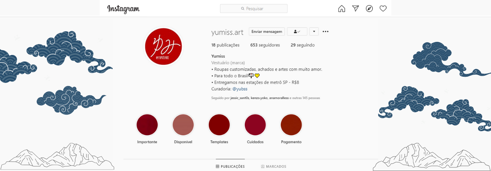

TCA 2018 - jogo
Jogo "Combate Biológico": O jogo foi inspirado no clássico de fliperama "Pac-Man" e adaptado para os temas solicitados pelos professores envolvidos no projeto.
Jogo "Combate Biológico": O jogo foi inspirado no clássico de fliperama "Pac-Man" e adaptado para os temas solicitados pelos professores envolvidos no projeto.
Objetivo: Desenvolver um website gratuito e aberto a todos os públicos, disponível em meio online e que permita que os usuários façam troca, doação e empréstimos de livros.
Estágio: Auxílio na criação do layout do website da empresa Crédito Seguro Digital, no período de estágio. Atuando como desenvolvedora Front-end e Designer de UX/UI.
Atualmente, sou aluna do 3° ano do Ensino Médio integrado ao curso técnico em Informática no Instituto Federal de São Paulo (IFSP). Apaixonada por Design e áreas relacionadas a criatividade e desenvolvimento web. Estou sempre em busca de enriquecer minha experiência tanto profissionalmente como pessoalmente, pois procuro sempre evoluir sem mudar a minha essência e raízes.
projeto pessoal - @yumiss.art